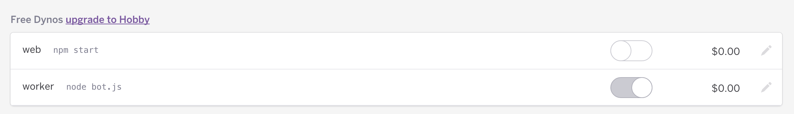

about
syllabus
All example source code
$ heroku login$ git init$ heroku git:remote -a your-app-name$ git add .
$ git commit -am "commiting the code"$ git push heroku masterYou should then see a whole lot of stuff telling you about how your app is starting and running!
If your app was a bot, you need an additional step. Since it’s not a web server, you have to tell heroku that this app is a “worker” app. This is done with a “Procfile”. This is a file called exactly “Procfile” in your node directory with a single line:
worker: node bot.jsYou then need to login to your dashboard and navigate to the app. The “worker” dyno must be enabled rather than the default web one (npm start). The app’s dashboard should look like the following:

Depending on the order in which you have done things, you might need to restart your app.
$ heroku restartSomething else you can do with heroku is set variables specific to your app. This is convenient for, say, API keys. In other words if you say:
$ heroku config:set api_key=99999999999999In your code, you can then have:
var key = process.env.api_key;More about config variables in Heroku’s help pages.